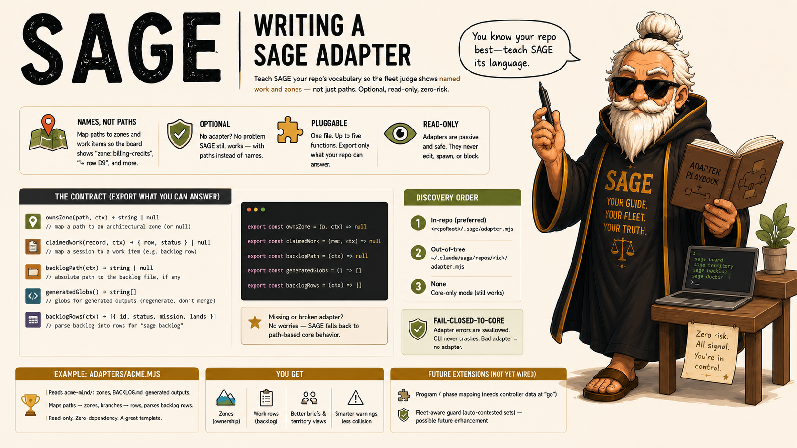

SAGE
Session Awareness & Guidance Engine
I don't do the work.
I judge it.
A passive, read-only judge for fleets of parallel AI coding sessions. One judge per repo.

Eight agents,
one repo,
zero coordination.
Run a fleet of coding agents at once and they collide — same files, duplicated work, lost context across sessions, no shared source of truth. Nobody is watching the fleet as a whole.
A judge,
not a boss.
SAGE sits beside your fleet and watches every session. Ask it anything — who's touching what, where two branches diverged, what the backlog says — and it answers.
"It never edits your code, never spawns agents, never blocks an action. Passive by design."
Advisor, not a boss — just the truth.

Four steps.
You're done.
Clone
git clone …/agentic-sage
Install
node install.mjs
Wires the hook; touches nothing else
Enable
sage on
Nothing runs until you do
Verify
sage doctor
Checks the setup is valid

Built on
six pillars.
Passive by design
Watches and answers; never edits, spawns, or blocks.
Read-only & safe
It cannot change your repo. Ever.
Zero-dependency
One Node CLI, no install bloat. Clone and run.
Default-off
Installing changes nothing until sage on.
Fail-open
Any error in the optional guard allows the action. Never in your way.
Hot-path-cheap
When idle the hook short-circuits instantly. Zero cost.
The whole fleet,
at your fingertips.
$ sage board # the whole fleet at a glance
→ 3 sessions active · 1 idle · 0 file conflicts detected$ sage territory # who's touching which files
→ src/auth/ session-2 · src/api/ session-1$ sage backlog # what each session claimed
→ session-1: feat/oauth · session-2: fix/auth-tokens · session-3: docs/setup$ sage doctor # is my setup valid?
✓ hook installed · ✓ sessions readable · ✓ all clear
Bring a judge
to your fleet.
One judge per repo. Passive by design. Zero-dependency Node CLI.